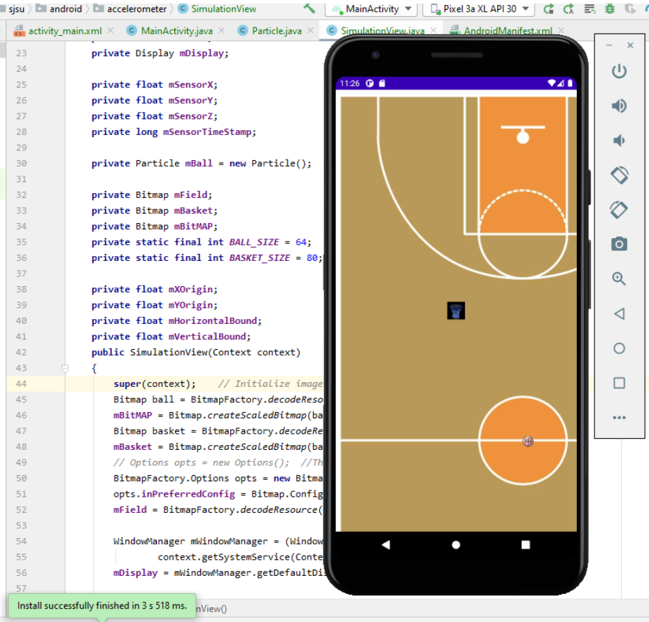
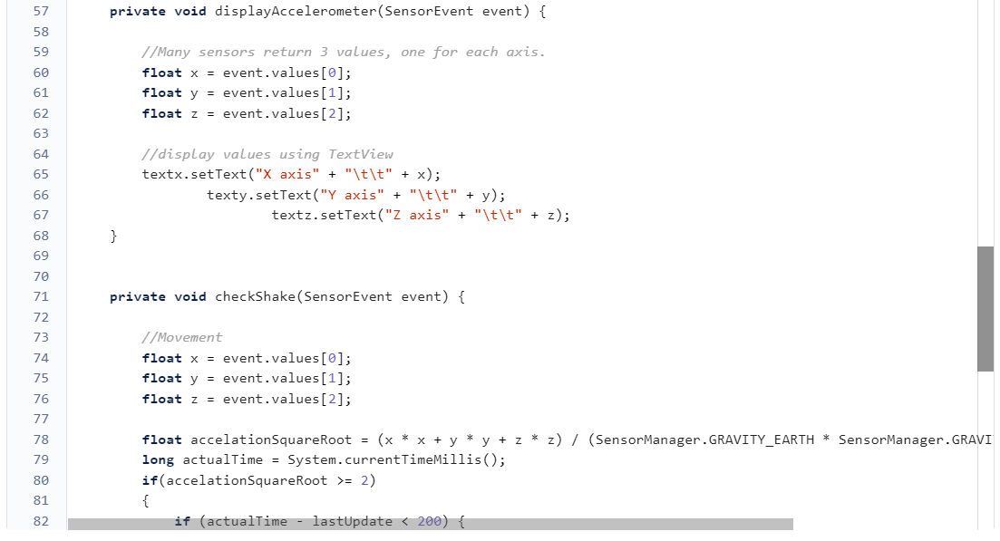
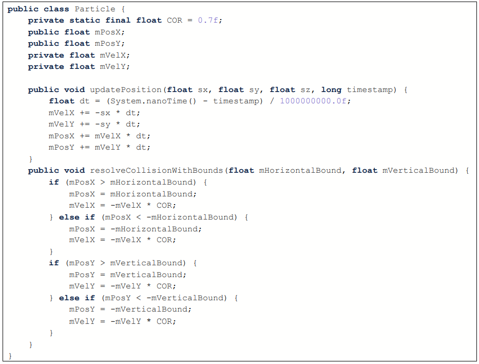
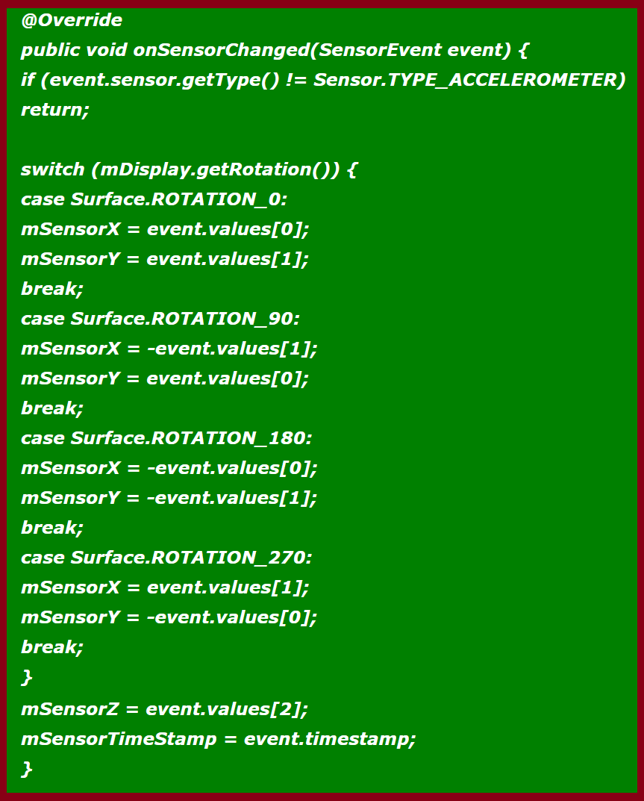

Basketball Android Game
For this project, I used acceleration values from an accelerometer android sensor to move a basketball on the screen. For this project, I used three classes: Main Activity, Simulation view, and Particle. In the MainActivity, the displayAccelerometer and checkShake methods receive SensorEvents, and receive x, y, z values. The updatePosition of the Particle class also receives x, y and z values. These values from these two classes, manage and control the direction the ball takes depending on how the user handles their phone. Shaking it, moving it upside down, tilting it, all move the ball in one direction or another. The point of the game is to get the ball through the hoop, which can be quite difficult.
 The sensor values are relative to the natural orientation of the device. But the display orientation may differ from the device orientation. e.g. If you rotate your phone, the system will reorient the display into portrait or landscape mode.
In the Main Activity class, to ensure optimum utilization of system resources, we use the PowerManager in the onCreate() method with SCREEN_BRIGHT_WAKE_LOCK value to keep the screen birhgt while it is on:
PowerManager mPowerManager = (PowerManager) getSystemService(POWER_SERVICE);
mWakeLock = mPowerManager.newWakeLock(WindowManager.LayoutParams.FLAG_KEEP_SCREEN_ON, TAG);
To make use of the wake lock to keep the screen on, I added the wake lock permission on the android manifest:
<uses-permission android:name="android.permission.WAKE_LOCK">
</uses-permission>
<uses-feature android:name="android.hardware.sensor.accelerometer"/>
The simulationView class, extends View and implements SensorEventListener interface. In the onSensorChanged() method of SensorEventListener, we gather the acceleration values along the three axis from the even.values array and timestamp of the data from event.timestamp:
